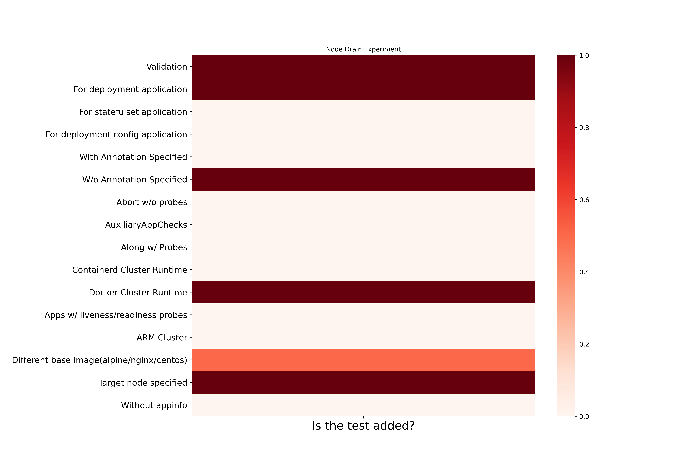
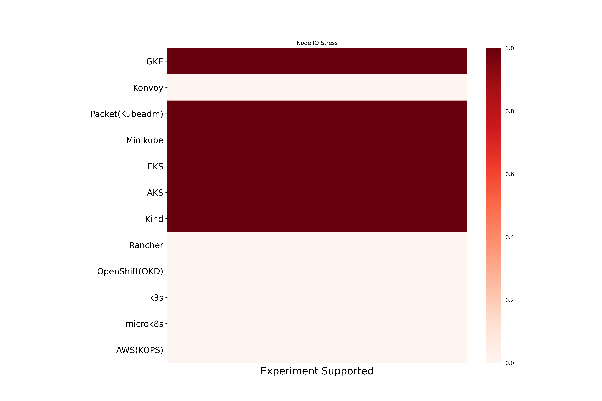

Node Drain Chaos
Node Drain drains the node where application pod is scheduled. . Here are the different coverage metrics for the experiment.
Node Drain experiment based coverage

Node IO Stress cluster runtime based coverage
Node IO Stress platform based coverage
